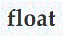

La propiedad CSS overflow especifica: si recortar contenido, dibujar barras de desplazamiento o mostrar el contenido excedente en un elemento a nivel de bloque.

La propiedad float especifica si un elemento debe salir del flujo normal y aparecer a la izquierda o a la derecha de su contenedor, donde los elementos de texto y los en línea aparecerán a su alrededor.La propiedad CSS clear especifica si un elemento puede estar al lado de elementos flotantes que lo preceden o si debe ser movido (cleared) debajo de ellos. La propiedad clear aplica a ambos elementos flotantes y no flotantes.
La propiedad CSS overflow especifica: si recortar contenido, dibujar barras de desplazamiento o mostrar el contenido excedente en un elemento a nivel de bloque.
La propiedad float especifica si un elemento debe salir del flujo normal y aparecer a la izquierda o a la derecha de su contenedor, donde los elementos de texto y los en línea aparecerán a su alrededor.
La propiedad CSS clear especifica si un elemento puede estar al lado de elementos flotantes que lo preceden o si debe ser movido (cleared) debajo de ellos. La propiedad clear aplica a ambos elementos flotantes y no flotantes.